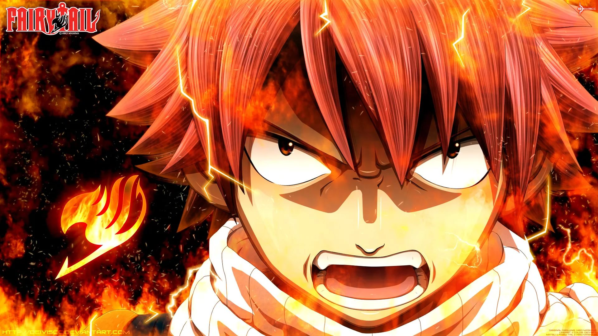
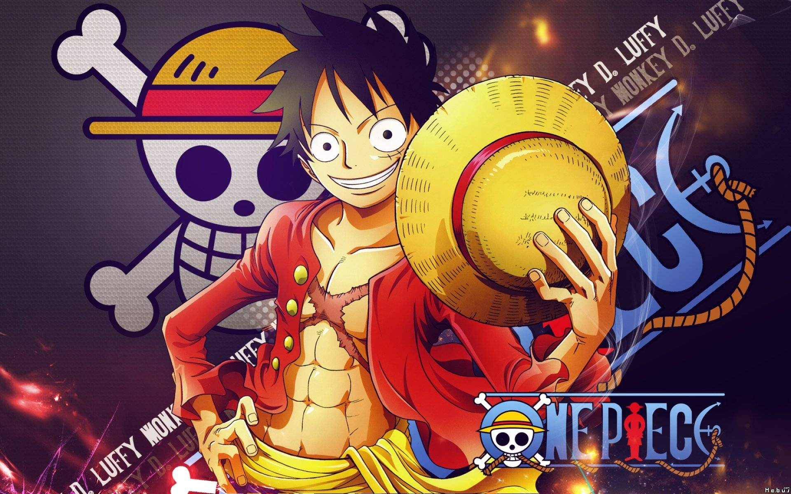
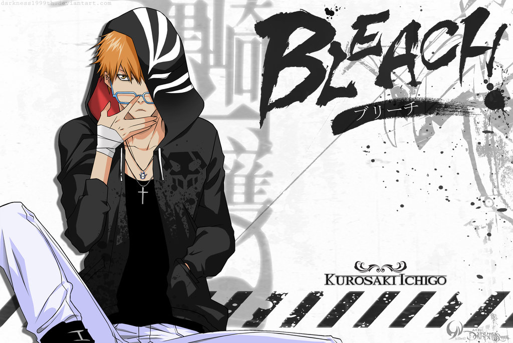

| Альтернативные названия | Фейри Тейл |
| Год | 2009,2010,2011,2012,2013 |
| Жанр | приключения,комедия,фэнтези,сёнэн |
| Страна | Япония |
| Количество серий | 175 |
| Дата выпуска | c 12.10.2009 по 30.03.2013 |
| Режиссер | Исихира Синдзи |
| Автор оригинала/Сценарист | Масима Хиро |
| Озвучивание | Ancord |
| Перевод | Мария Гостюхина,Blazing Wizard,Jenia akaZub |
Описание: Фейри Тейл – знаменитая на весь мир своими безбашенными выходками Гильдия волшебников по найму. Молодая волшебница Люси была уверена, что, став одним из её членов, попала в самую замечательную на свете Гильдию… до тех пор, пока не познакомилась со своими камрадами – взрывным огнедышащим и сметающим всё на своём пути Нацу, летающим говорящим котом Хэппи, эксгибиционистом Греем, занудой-берсерком Эльзой, гламурным и любвеобильным Локи… Вместе им предстоит одолеть немало врагов и пережить множество незабываемых приключений!

| Альтернативные названия | Ван-Пис |
| Год | 1999 |
| Жанр | приключения,комедия,фэнтези,сёнэн |
| Страна | Япония |
| Количество серий | 780 |
| Дата выпуска | c 13.10.199 по 19.03.2017 |
| Режиссер | Уда Коносукэ |
| Автор оригинала/Сценарист | Ода Эйитиро |
| Озвучивание | Shachiburi |
| Перевод | Raney |
Описание: Манки Д. Луффи, никогда не расстающийся с любимой соломенной шляпой, – во всех отношениях необычный паренек. Во-первых, он когда-то съел один из Дьявольских плодов, наделяющих человека необычными способностями, и теперь может растягивать части своего тела подобно резине. Во-вторых, он мечтает рано или поздно стать Королем пиратов, найдя Ван Пис –сокровище, собранное и спрятанное неизвестно где легендарным Голдом Роджером. Множество пиратов уже ищет Ван Пис на Гранд-Лайне – океаническом течении, опоясывающем весь мир и связывающем воедино множество островов. Мечта у Луффи есть, необходимая для ее воплощения сила – тоже. Чего же не хватает? Разумеется, команды верных «накама» – друзей, которые готовы будут отправиться за своим капитаном хоть на Гранд-Лайн, хоть на плаху. Набор в команду открыт, и стать другом Луффи может кто угодно: и смертельно опасный охотник на пиратов Зоро, и обожающая деньги мошенница Нами, и неисправимый лжец Усопп, и повар-бабник Санджи, и многие другие. Главное, что у каждого «пирата Соломенной Шляпы» есть мечта и готовность пожертвовать собой ради близких людей!

| Альтернативные названия | Блич |
| Год | 2004 |
| Жанр | приключения,комедия,фэнтези,сёнэн |
| Страна | Япония |
| Количество серий | 366 |
| Дата выпуска | c 05.10.2004 по 27.03.12 |
| Режиссер | Абэ Нориюки |
| Автор оригинала/Сценарист | Кубо Тайто |
| Озвучивание | Anna,Liha,n_o_i_r,Ancord |
| Перевод | Vallar |
Описание: Куросаки Ичиго — не простой пятнадцатилетний парень, потому как, сколько он себя помнит, всегда мог запросто общаться с духами и призраками, невидимыми для обычных людей. В один судьбоносный день ему является сама синигами (богиня смерти) Кучики Рукия, охотящаяся за Пустым (злым духом, пожирающим души людей). Во время битвы с этим чудовищем Ичиго и Рукия получили серьёзные ранения, и богине пришлось передать парню свои силы, чтобы помочь ему одержать победу над монстром, в результате чего Ичиго сам стал синигами! Но сделав это, Рукия теряет всю свою мощь, и теперь ожидает, что новоявленный синигами продолжит её миссию по отлову и уничтожению Пустых. Так начинаются увлекательные приключения Ичиго и Рукии!